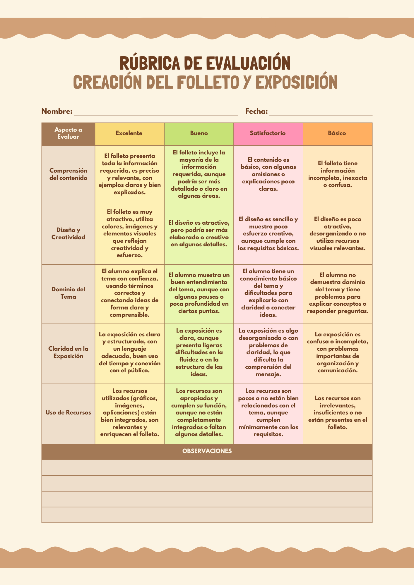
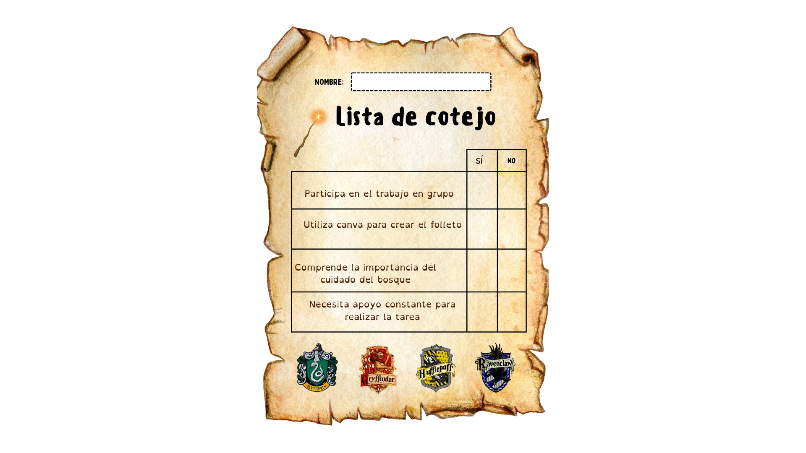

Coge el tuyo
¡Guardianes y guardianas, habéis llegado a la última etapa de vuestra misión!
Tras investigar, aprender, diseñar y crear vuestros folletos, ha llegado el momento de compartir con el resto del equipo todo el trabajo realizado. Ahora vuestro conocimiento no se queda solo en el aula: ¡se convierte en un mensaje para cuidar el bosque!
En esta actividad vais a desarrollar vuestra expresión oral, presentando vuestro folleto al resto de compañeros y compañeras. Utilizaréis una presentación creada en Canva para explicar de forma clara y organizada todo lo que habéis aprendido y diseñado.
También será un momento muy importante de evaluación, el maestro utilizará una rúbrica de evaluación y una lista de cotejo para valorar vuestro trabajo final. Estos instrumentos no solo sirven para calificar, sino también para que tengáis muy claros los indicadores de éxito, de modo que podáis tenerlos en cuenta durante la preparación de vuestra presentación y así conseguir el mejor resultado posible.
Para ello, utilizaréis las siguientes rúbricas de evaluación y listas de cotejo, que os ayudarán a comprobar si habéis cumplido los objetivos del proyecto y a identificar vuestros logros y aspectos de mejora.


Escuchad con atención los trabajos de los demás, valorad sus ideas y aprended de cada presentación. Cada folleto es una pieza clave en la misión de proteger nuestro entorno.
¡Ha llegado el momento de compartir vuestro mensaje y demostrar que sois auténticos guardianes del bosque!